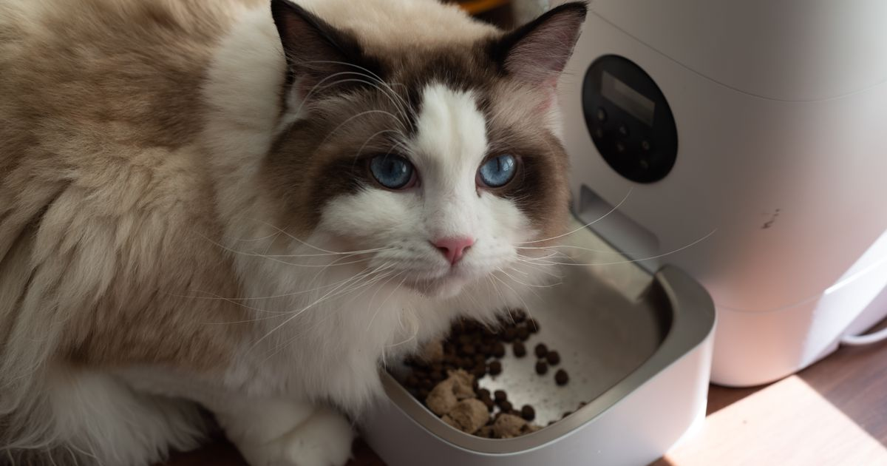
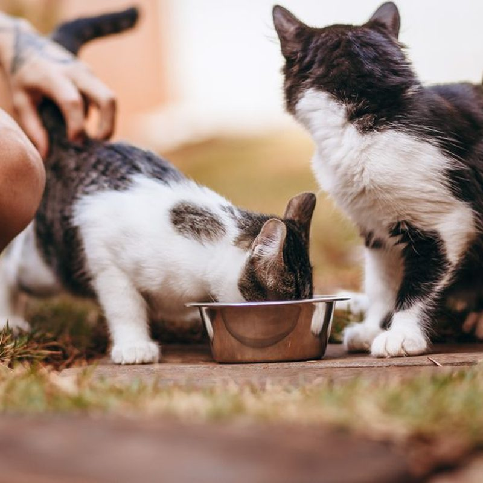
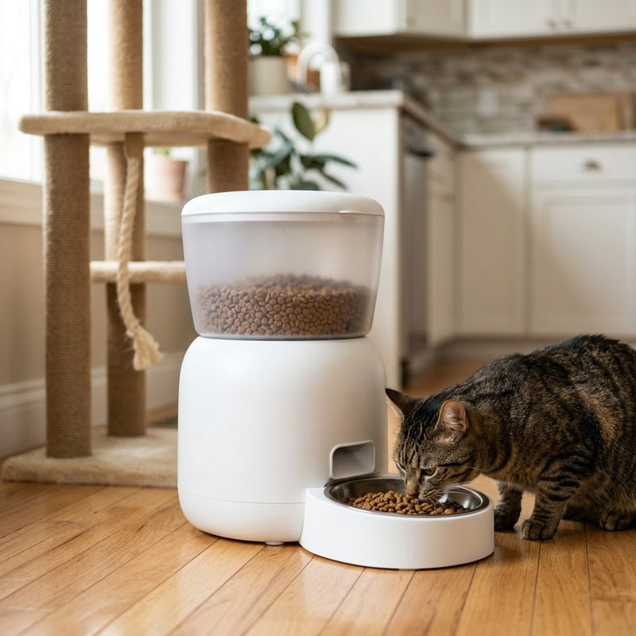
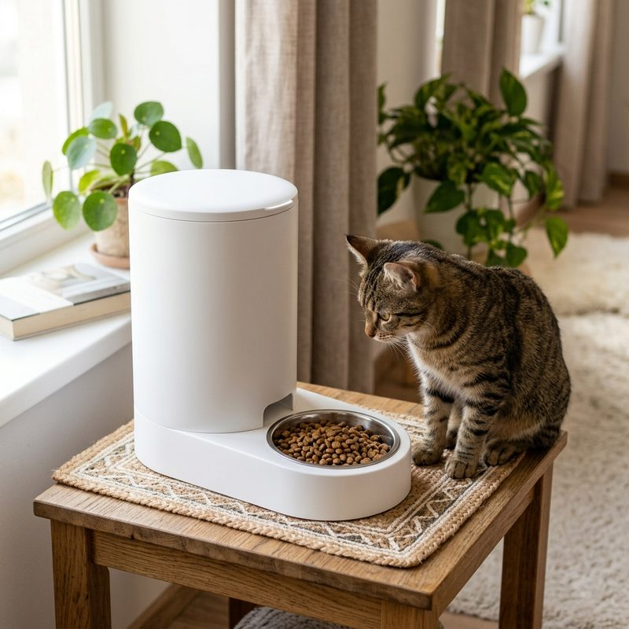
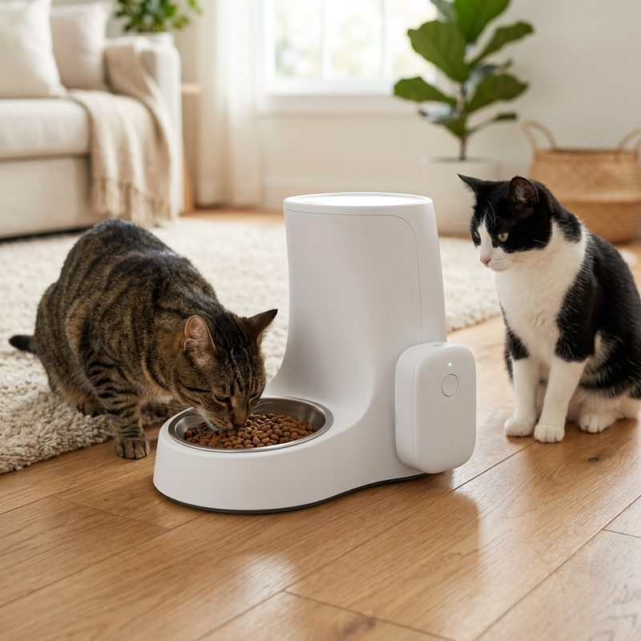
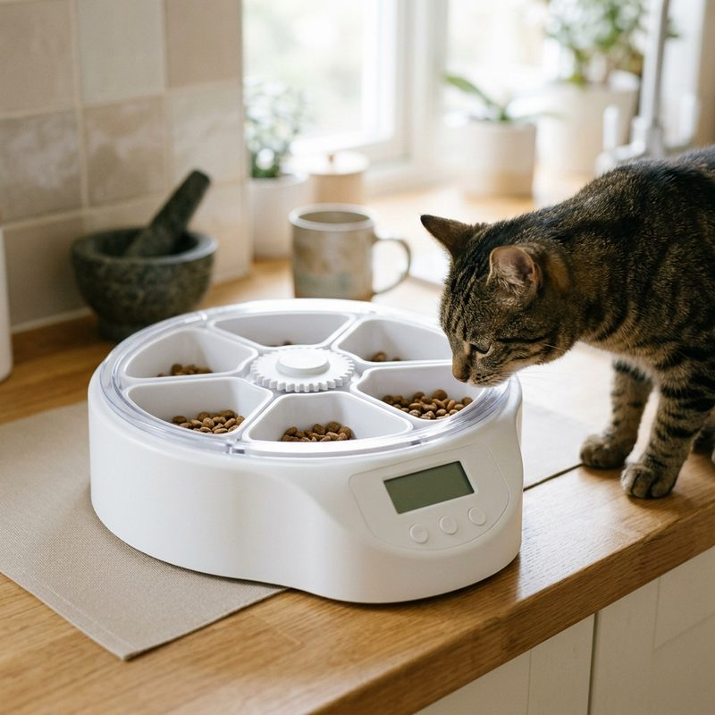

Este post contém links de afiliado. Podemos receber uma comissão em compras feitas através deles, sem custo adicional para você.
Comparamos 5 alimentadores automáticos para gato realmente à venda no Brasil em 2026, de opções sem Wi-Fi a modelos com reconhecimento por RFID: Cat Mate C500, Velds 4L Wi-Fi, Newpet, um alimentador com reconhecimento RFID anti-roubo e o Dogis Lite. O melhor pra você depende de três coisas — se o gato come ração úmida ou seca, se você tem mais de um gato disputando comida, e quanto está disposto a pagar por controle remoto.
Key Takeaways
- Para ração úmida, o Cat Mate C500 segue sendo a opção mais especializada, com bolsas de gelo reutilizáveis para manter o alimento seguro por mais tempo.
- O Velds 4L Wi-Fi tem o melhor equilíbrio entre preço (R$ 249,99) e recursos entre os modelos com app.
- O Newpet é uma opção compacta com Wi-Fi, pensada para 1 gato — não serve para ração úmida.
- Em casas com dois ou mais gatos que disputam comida, o alimentador com reconhecimento RFID anti-roubo é o único do grupo que resolve o problema, liberando a porção só para o gato cadastrado.
- O Dogis Lite é a única opção sem Wi-Fi do grupo, e aceita ração seca ou úmida — útil também para dosar remédios diluídos.
guia completo de comedouro automático para pet
| Produto | Preço aprox. | Capacidade | Wi-Fi/App | Ração úmida | Nota |
|---|---|---|---|---|---|
| Cat Mate C500 | Faixa intermediária | 5 pratos | Não | Sim (com gelo) | 8.6 |
| Velds 4L Wi-Fi | R$ 249,99 | 4L | Sim | Não | 8.5 |
| Newpet (NPT322) | R$ 189,95 | 2L | Sim | Não | 8.0 |
| New Pet RFID (NPC9004) | R$ 663,00 | 1,4L | Sim | Sim | 7.8 |
| Dogis Lite (DAO30BR) | R$ 330,62 | 6x 180ml | Não | Sim | 7.6 |

Para gatos que comem ração úmida ou têm restrição alimentar que exige comida fresca, o Cat Mate C500 usa um par de bolsas de gelo reutilizáveis sob os pratos para manter a comida em temperatura segura por mais tempo — uma estimativa realista é de 8 a 12 horas em ambientes quentes. Com 5 pratos programáveis, resolve um problema que praticamente nenhum concorrente com Wi-Fi endereça bem.
Leia o review completo do Cat Mate C500
🐾 Confira o preço e a disponibilidade atual no Mercado Livre.
Ver no Mercado LivreLink de afiliado: podemos receber uma comissão por compras feitas através deste link, sem custo adicional para você.

O Velds 4L Wi-Fi é vendido em torno de R$ 249,99 a R$ 349,00 dependendo da loja, com variações observadas também no Mercado Livre e na Amazon. Tem Wi-Fi 2,4GHz, app próprio com porções ilimitadas programáveis e gravação de mensagem de voz para chamar o gato. É vendido pra cães e gatos, mas o bocal e o prato são mais baixos que a linha usada em comedouros maiores, adequados à porção felina.
🐾 Confira o preço e a disponibilidade atual no Mercado Livre.
Ver no Mercado LivreLink de afiliado: podemos receber uma comissão por compras feitas através deste link, sem custo adicional para você.

O comedouro Newpet (modelo NPT322) tem reservatório de 2L (até 2kg de ração) e custa R$ 189,95 no Pix (de R$ 298, 36% off) ou R$ 199,95 em outros meios, consultado em 11/10/2026. Conecta-se ao app via Wi-Fi para programar horários e porções pelo celular, com alimentação via USB. É um dos modelos mais vendidos da marca no Mercado Livre, com avaliação de 4,9 estrelas.
🐾 Confira o preço e a disponibilidade atual no Mercado Livre.
Ver no Mercado LivreLink de afiliado: podemos receber uma comissão por compras feitas através deste link, sem custo adicional para você.

O diferencial deste alimentador da New Pet (modelo NPC9004) é único no grupo: vem com 2 coleiras com chip RFID incluídas, e a tampa só abre automaticamente para o pet cadastrado, fechando quando ele se afasta — resolve o problema clássico de um gato dominante comer a porção do outro. Tem reservatório de 1,4L (até 2kg), bolsa de gelo isolante inclusa para manter ração úmida fresca, e bateria com autonomia declarada de até 120 dias. Custa R$ 663 (15% off de R$ 698, ou 12x de R$ 64,32 sem juros), consultado em 11/10/2026, com avaliação de 4,7 estrelas (195 avaliações) — de longe o mais caro do grupo, mas é o único que resolve disputa entre pets.
🐾 Confira o preço e a disponibilidade atual no Mercado Livre.
Ver no Mercado LivreLink de afiliado: podemos receber uma comissão por compras feitas através deste link, sem custo adicional para você.

O Dogis Lite (modelo DAO30BR) é um alimentador local, sem Wi-Fi nem app: um carrossel com 6 porções de 180ml (cerca de 90g cada), sendo 5 delas programáveis, com sistema antiesmagamento que evita obstrução. Funciona via cabo USB ou 3 pilhas tipo C como backup. Aceita ração seca ou úmida, e pode ser usado para administrar remédios diluídos em patê ou sachê na dose exata — útil para gatos em tratamento. Custa R$ 330,62 no Mercado Livre (7% off de R$ 356), consultado em 11/10/2026, com avaliação de 4,7 estrelas (765 avaliações).
🐾 Confira o preço e a disponibilidade atual no Mercado Livre.
Ver no Mercado LivreLink de afiliado: podemos receber uma comissão por compras feitas através deste link, sem custo adicional para você.
Um gato sozinho se adapta bem a qualquer um dos cinco modelos deste comparativo, já que a competição por comida não é um fator. Em casas com dois ou mais gatos, o cenário muda: um alimentador de porta única tende a ser dominado pelo gato mais assertivo, que come sua porção e a do outro antes que ele chegue ao pote.
Para esse cenário, o alimentador com reconhecimento RFID é a solução mais direta. A alternativa mais econômica é um aparelho por gato, posicionados em cômodos ou cantos diferentes da casa, para que cada um tenha seu próprio horário e porção sem disputa.
Nossa leitura do mercado: ao comparar os modelos para gato com os equivalentes para cachorro (ver comparativo de comedouros para cachorro), a diferença mais consistente não é o preço, mas a granularidade de porção — modelos para gato tendem a permitir configurações menores e mais frequentes, refletindo o padrão alimentar da espécie.
comedouro automático gato x cachorro — diferença detalhada
Gatos costumam estranhar o barulho do mecanismo de dispensa nas primeiras vezes, e uma transição malfeita pode levar o animal a evitar o aparelho. O primeiro passo é posicionar o alimentador desligado, sem ração, no mesmo local onde o gato já come, deixando-o alguns dias apenas para o animal se acostumar com o objeto novo no ambiente.
Depois dessa fase de habituação, programe uma primeira porção no horário em que o gato já espera ser alimentado, mantendo o pote antigo disponível ao lado por uma ou duas semanas. Reduza gradualmente a quantidade no pote antigo até retirá-lo, observando se o gato come normalmente pelo alimentador automático antes de depender dele por completo.
A limpeza regular evita dois problemas comuns: acúmulo de gordura da ração, que pode rançar e causar recusa alimentar, e falhas mecânicas por resíduo de pó de ração no mecanismo de dispensa. Para ração seca, o reservatório e o funil podem ser limpos a cada duas ou três semanas com um pano seco; já o prato onde o gato come deve ser lavado diariamente, ou a cada troca de porção em modelos para ração úmida como o Cat Mate C500 e o Dogis Lite.
Vale checar o manual de cada modelo antes de usar água diretamente nos componentes eletrônicos: a maioria dos alimentadores com Wi-Fi tem o compartimento do motor e da placa separado do reservatório de ração, mas nem todos são totalmente vedados contra umidade.
As notas e recomendações deste ranking foram construídas a partir de especificações técnicas divulgadas pelos fabricantes e vendedores, cruzadas com preços verificados em sites oficiais e marketplaces nas datas indicadas em cada produto. Não realizamos teste físico simultâneo dos 5 aparelhos — os dados de capacidade, recursos e preço refletem o que consta nos anúncios e sites oficiais verificados na data de consulta. Preços de produtos eletrônicos mudam com frequência; confirme o valor atual antes de comprar. Veja nossa política editorial e de afiliados para entender como selecionamos e verificamos produtos.
Depende da rotina do gato e do seu orçamento. Para ração úmida, o Cat Mate C500 é especializado nisso. Para controle remoto com bom preço, o Velds 4L Wi-Fi é o mais equilibrado. Para casas com vários gatos que competem por comida, o alimentador com reconhecimento por RFID resolve o problema. Para quem não quer depender de Wi-Fi, o Dogis Lite é a opção mais em conta.
Modelos de porta única, como o Velds ou o Newpet, funcionam bem para um gato. Em casas com dois ou mais gatos, um alimentador com reconhecimento por RFID resolve a disputa por comida, já que só libera a porção para o gato cadastrado na tag. Sem esse recurso, a alternativa mais confiável é um aparelho por gato, em cômodos diferentes.
O Dogis Lite não depende de Wi-Fi nem app: funciona a pilha, com um carrossel de 6 compartimentos programados localmente no próprio aparelho, e aceita ração seca ou úmida. É uma boa opção para quem não quer depender de conexão nem de conta na nuvem.
O reservatório de ração seca pode ser limpo a cada 2 a 3 semanas, mas o prato onde o gato come deve ser lavado diariamente ou a cada troca de porção, especialmente em modelos para ração úmida como o Cat Mate C500, para evitar acúmulo de gordura e proliferação de bactérias.
Não existe um único "melhor" alimentador automático para gato — existe o melhor para a rotina do seu gato e seu orçamento. Para ração úmida, o Cat Mate C500 segue imbatível. Para quem quer app e controle remoto sem gastar muito, o Velds 4L Wi-Fi é a escolha mais equilibrada. Quem tem mais de um gato brigando por comida deve considerar o alimentador com reconhecimento RFID. E quem quer fugir do Wi-Fi sem abrir mão de ração úmida tem no Dogis Lite a opção mais em conta do grupo.
melhor comedouro automático para cachorro · como configurar o app do comedouro Wi-Fi · vale a pena um comedouro automático?
Veja nossa política editorial e como verificamos as fontes citadas neste artigo.
Nildo Alves — tutor de pets e curador de produtos no Smart Pet Gadgets. Pesquisa especificações de fabricante, dados de mercado e fontes veterinárias publicadas por terceiros para ajudar outros tutores a escolher melhor.
Sobre o Smart Pet Gadgets · Contato · Política editorial e de afiliados